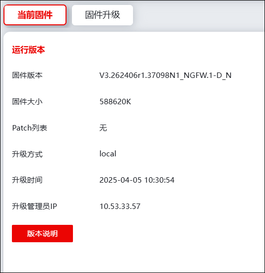
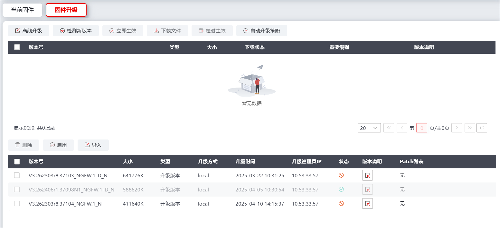
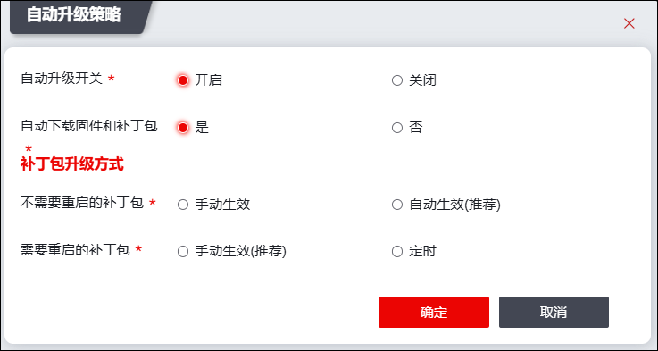
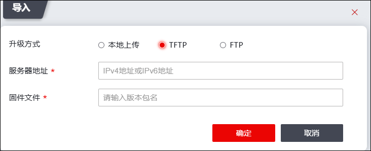
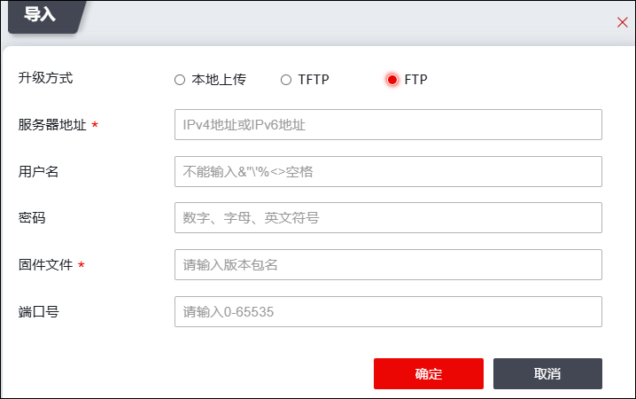
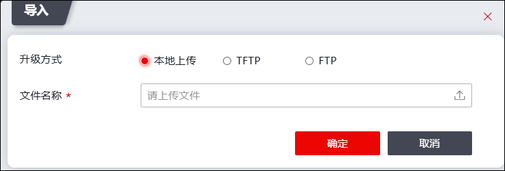

l当前固件
| 步骤1 | 选择 ，点击“当前固件”页签，如下图所示。 |

页面展示当前固件版本、固件大小、Patch列表、升级方式、升级时间、升级管理员IP及版本说明等信息。
| 步骤2 | 点击【版本说明】按钮，可查看版本说明的详细信息。 |
l固件升级
“固件升级”界面可升级系统固件版本和补丁包。
| 步骤1 | 选择 ，点击“固件升级”页签，如下图所示。 |

|
²界面下方区域显示手动导入固件版本；界面上方区域显示通过检测新版本获取的补丁包和固件版本信息。 |

| 步骤2 | 获取固件版本/补丁包。 |
Ø向云联动服务器获取固件版本/补丁包
1）点击界面的【检测新版本】，可立即获取新版本（状态为“未下载”）。勾选“未下载”状态的新版本，点击【下载文件】可下载新版本到本地磁盘。
2）点击【自动升级策略】，系统会定期检测新版本，在“自动下载固件版本和补丁包”开启的情况下还会自动下载新版本到本地磁盘，如下图所示。

在配置自动升级策略时，各项参数的具体说明如下表所示。
参数 |
说明 |
|---|---|
自动升级开关 |
设置是否开启自动升级机制。开启后，防火墙系统每隔一小时自动进行检测新版本。点击【开启】，需设置是否自动下载固件版本和补丁包。 |
自动下载固件版本和补丁包 |
可选项：是、否。选择“是”，防火墙系统在自动检测到版本时，直接下载对应版本，并保存在本地磁盘。 选择“是”时，需要设置自动下载的补丁包生效方式。 |
不需要重启的补丁包 |
设置不需要重启的补丁包的生效方式，可选项：手动生效、自动生效（推荐）。 Ø手动生效：补丁包安装完成后，由用户自行设置生效。 Ø自动生效：补丁包安装完成后自动生效，无需用户附加操作。 |
需要重启的补丁包 |
设置需要重启的补丁包的生效方式，可选项：手动生效（推荐）、定时。 Ø手动生效：补丁包安装完成后，由用户自行重启生效。 Ø定时生效：补丁包安装完成后会根据设定时间，自动重启生效。 |
| 步骤3 | 升级固件版本/补丁包。 |
Ø升级补丁包
离线升级是将系统升级包通过TFTP/FTP/WEB本地上传方式传输到目标系统，并使之生效的过程，通过TFTP/FTP进行升级时，在升级之前需要事先配置好TFTP/FTP服务器及其工作目录，并保证升级文件存放在工作目录中，并确保TFTP/FTP服务器和设备之间有路由可达。
点击【离线升级】，配置相关参数，点击【确定】，系统可按照配置升级补丁包。
Ø升级固件
新的固件版本文件导入/下发到系统中后，选中固件版本列表，点击【启用】可将该固件版本文件作为当前系统运行的固件版本文件。
采用本地导入方式导入新的固件版本文件，操作步骤如下：
点击界面的【导入】，弹出“导入”窗口，配置相关参数，点击【确定】导入固件文件。
各导入方式说明如下：
üTFTP导入方式
导入方式选择“TFTP”，如下图所示。

采用TFTP方式导入固件时，各项参数的具体说明如下表所示。
参数 |
说明 |
|---|---|
服务器地址 |
必填项。输入存放固件版本文件的TFTP服务器的IP地址。 |
固件文件 |
必填项。输入固件版本的名称。 |
üFTP服务器方式
导入方式选择“FTP”，如下图所示。

采用FTP方式导入固件时，各项参数的具体说明如下表所示。
参数 |
说明 |
|---|---|
服务器地址 |
必填项。输入存放固件版本文件的FTP服务器的IP地址。 |
用户名 |
FTP服务器不支持匿名登录时为必选项。输入FTP服务器的合法登录账号名称。 |
密码 |
FTP服务器不支持匿名登录时为必选项。输入FTP服务器的合法登录账号名称对应的密码。 |
固件文件 |
必填项。输入固件版本文件的名称。 |
端口号 |
设置服务器发送固件文件的端口号。 |
ü本地方式
导入方式选择“本地上传”，如下图所示。

采用本地方式导入固件时，点击“”，选择管理主机中存放的固件版本文件，然后点击【确定】按钮导入固件版本文件。
| 步骤4 | 立即生效 |
勾选升级版本，点击【立即生效】按钮，会直接升级此版本，如果文件未下载，会直接下载文件并升级。
| 步骤5 | 下载文件 |
勾选下载文件，点击【下载文件】按钮，可通过云端下载版本文件到本地，该操作只是将文件下载到本地，不会立马生效，需要手动触发生效。
| 步骤6 | 定时生效 |
选择生效版本，设定时间，设定时间达到时，后台会自动升级版本。